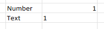

4 Data input
Data must be input into the A2SIT app using a formatted Excel template. The app expects the data to be in a certain format, so it is very important to closely follow the instructions here, otherwise you may run into errors!
4.1 Template
The A2SIT app generates customised templates for each country. To download the template, select your country from the dropdown menu, then click the “Download country template” button.

The dropdown menu contains all the countries currently supported by the app1.
The next step is to fill in the template with your data. Opening the template, you will find that it has three tabs:
- Intro: instructions on how to fill in the template
- Data: this is where you enter your indicator data
- Structure: this defines the structure of the index
The first tab is simply information and is ignored by the A2SIT app. We will also walk through the compilation of the spreadsheet here. Importantly, do not change the names of the Data and Structure tabs: these are tab names expected by the app.
4.1.1 Data
The data tab contains a table which looks something like this:
In this table (excluding the metadata rows/columns), each row represents one Admin 2 region, and each column is one indicator.
The admin2Pcode column has the main codes used by the app, and this is automatically filled in depending on the country you have selected. These codes must not be edited because they are used to generate the maps later on in the app. The Name column has the corresponding name of each region. These names may be edited if you wish, although it is recommended not to edit them unless they contain spelling errors etc.
The next columns to the right are the data columns: this is where you should paste your indicator data. The number of columns here will depend on how many indicators you have. You can expand the table as far as you want. Consider some important rules though:
- All indicator data must be numerical. You cannot enter words like “yes”/“no”, or categories such as “XL”, “L”, etc. The app only understands numerical indicator data. Also data that looks numerical, like “10 million” will not work: it should be 10000000!
- Each indicator data column should be accompanied by the metadata cells above it (name, group, direction, etc). Copy these cells as far as necessary. Do not leave metadata cells with no indicator data below them (delete these if this happens).
- Try to fill in data for every Admin2 code. Admin2 codes with no indicator data will be deleted by the app.
- Do not input data for rows where there are no Admin2 codes.
- Make sure each indicator has at least some data available. Indicators with no data can still be input into the app, but they will be automatically removed.
The best way to see what the correctly-formatted input data looks like is to simply download the example data set.
The row immediately above the indicator data contains the indicator code. These should be short unique codes which identify the indicator. Ideally these should be about 8 characters long or less, have no spaces, and should start with a letter (not a number). Examples could be “GDPpc”, “Migrants”, “Gini”. These will be used in some plots in the app, so it will help you if they are descriptive.
The next row above is the indicator name. These can be longer indicator names which will also be displayed in the app. Examples can be “GDP per capita”, “Gini coefficient” and so on.
The row above the indicator name is the group to which the indicator belongs in the level immediately above it. This defines the structure of the index and is explained in detail in the Structure section below.
The direction row defines the direction of each indicator. An indicator that shares the same “direction” as the index should have a “1” - such indicators in the context of Severity could be rates of domestic violence, or the number of displaced people. Higher values of these indicators imply higher severity. On the other hand, indicators such as coverage of public services, number of hospitals, etc run in the opposite direction: higher values imply less severity, therefore they should be assigned a direction of “-1”. The direction row can only take values of -1 or 1.
Finally, the initial weight row gives a weight for each indicator. It is recommended to leave these all at “1” (representing equal weighting) unless you have good reasons for doing otherwise. The weights are used in the aggregation step later in the app to calculate the index scores, and can be used to increase or decrease the contribution of each indicator. However, weighting can be complex and highly subjective. If you do wish to adjust weights, consider that weights are relative within each aggregation group: they will be rescaled to sum to 1 within each group by the app. In other words, if we have three indicators in a group with weights 1, 1, and 1, they will each get a weight of 1/3.
4.1.2 Structure
The “Structure” tab contains a table which defines the structure of the index. This is pre-compiled so there is no need to edit it unless you want to. However, it is a little more complex than the data tab.
Each row in the table gives details about one of the aggregates created by aggregating indicators together, with columns describing their attributes:
- iCode is the code assigned to the aggregate.
- Parent is the parent iCode: this defines which group the aggregate is in, in the level immediately above.
- iName is a longer name assigned to the aggregate.
- Level is the level in the framework, where 1 is the indicator level, 2 is the level created by aggregating indicators, and so on.
- Weight is the weight assigned to the aggregate. As mentioned previously, weights are relative within aggregation groups.
The iCode, Parent and Level columns together define the structure of the index. For example, in the example above the first four aggregates (at level 2) are defined as belonging to the “Socio_econ” group in level 3, according to the Parent column. The “Socio_econ” aggregate itself is defined in row 23 as belonging to the “vulnerabilidad” dimension, in level 4. Finally, the “Vulnerabilidad” dimension itself is one of four main dimensions of the “MVI”, which is the top level index at level 5.
Notice that all the iCodes with Level = 2 are the entries in the “Group” row of the Data tab. This is to define where in the index each group is positioned.
You can edit the Structure table to include any number of aggregation groups and levels. However, keep in mind:
- Every indicator or aggregate must have a parent, unless it is at the top level. You cannot define a parent that is more than one level above - if needed, define intermediate aggregates with only one indicator/aggregate.
- All the codes in the “Group” row of the Data tab must be included in the Structure table.
The “Structure” table is in fact a simplified version of the “iMeta” table that is used in the COINr package upon which the A2SIT app is based. If you run into problems, or want to learn more about these input tables, you may wish to read the relavant COINr documentation page.
4.2 Upload
Once the template has been correctly compiled, you are ready to upload it to the app.
On the “Upload” tab, first make sure you have selected the correct country in the dropdown, then browse to the your input data file and click the “Load” button. At this point, either the data upload will be successful or not. Here’s what to do.
4.2.1 Successful
If the data upload is successful, the app should give several immediate outputs. First, a confirmation message that the upload was successful, then some summary information and possibly some messages.
The summary information will consist of a header which reports the country name, and also the number of indicators and regions.
Below this will be a sunburst plot of the framework you have specified, which should look something like this:

This is a plot of the index framework as specified in the Structure table. Hovering over segments will show indicator names, and clicking on segments will zoom in on lower levels. Double click to reset the plot. Like most plots in the app, a snapshot of the plot can be downloaded as a png file by clicking the small camera icon in the upper right of the plot.
The framework plot also shows the effective weight of each indicator and aggregate in the framework, as a result of the weights specified and the index structure, as the angle of each segment. Notice that where dimensions have more indicators, these are effectively (individually) weighted less. This is important to consider in defining the index structure.
Finally, there may be some additional messages in the “Messages” box. In our example, we receive several messages - these relate to the fact that the app has detected some indicators with no data points and removed them (since they cannot be used in the calculations). Furthermore, it has found some aggregate groups with no “children” (indicators) defined in them. These empty groups also cannot be used in the calculation and so are removed. Check these messages carefully to ensure the app is not doing anything you don’t want to do.
From here, if you are happy with the details reported by the app, you can move to the next tab.
4.2.2 Unsuccessful
If you do have trouble uploading your data, don’t worry! The input is a little complex but the app will try to tell you what the problem is.
If the upload is unsuccessful, the app should report a helpful error message in the “Messages” box. For example:
Try to address the problem reported by the app. There may be more than one problem but the app will only report the first one it finds, so you may need to upload more than once to correct multiple problems. If you have trouble, re-read very carefully the rules in the sections above and check the example data set. Common problems could be:
- Mismatch between Structure and Data tables: remember that codes are case-sensitive, and cross check very carefully to ensure that all group names from the Data table are in the Structure table.
- Non-numeric data: make sure each column of data is actually formatted as numeric. Even it looks like a number, Excel may have interpreted it as text. In Excel, a cell formatted as a number will be right-aligned, whereas text is left-aligned (see below).

- Altering spreadsheet: try above all to avoid modifying the spreadsheet in unexpected ways. For example, do not add extra or numbers in cells near the tables. Do not change the names of required columns, and don’t move tables, or rename tabs. You CAN add extra tabs to the spreadsheet with other calculations as the app will only look for the Data and Structure tabs.
4.3 What’s next
From here, things get a lot smoother: the app should now work with fairly minimal interventions on your part. Move to the “Analysis” tab to begin analysing your data!
This list represents the countries for which Admin 2 shape files are available for mapping.↩︎